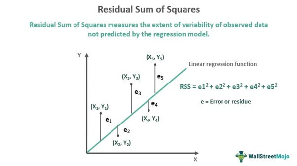
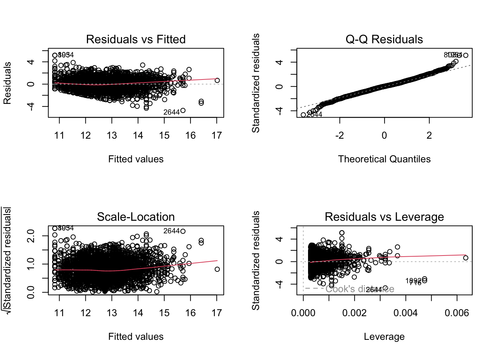

library(dplyr)
dropout <- read.csv("data/dropout.csv", sep = ";") %>%
rename(
grade_sem1 = Curricular.units.1st.sem..grade.,
grade_sem2 = Curricular.units.2nd.sem..grade.,
admission_grade = Admission.grade
)
# Students who completed units in both semesters, as before
completers <- dropout %>% filter(grade_sem1 > 0, grade_sem2 > 0)
fit <- lm(grade_sem2 ~ grade_sem1, data = completers)Inference in Linear Regression
Simple Linear Regression treated regression as a prediction algorithm and deliberately set the statistics aside. This page picks them back up.
The distinction worth holding onto is that these two views answer different questions.
- Prediction asks how close the model’s guesses are for students it has never seen. It is judged on held out data.
- Inference asks how precisely a coefficient has been estimated, and whether we can rule out that it is really zero. It is judged using the sampling distribution of the estimate.
A coefficient can be overwhelmingly significant and contribute almost nothing to prediction. That happens routinely with large samples, where tiny effects clear the significance bar easily. Neither view, on its own, tells you that changing a predictor would cause the outcome to change.
Setup
We use the same model as the previous page.
The Model Being Estimated
The prediction page wrote the fitted equation. The statistical model behind it is:
\[ Y_i = \beta_0 + \beta_1 X_i + \varepsilon_i, \quad \quad \text{for}\:i=1,2,\dots,n \]
where:
- \(Y_i\) is the ith observation on the target variable.
- \(X_i\) is the ith observation of the feature.
- \(\beta_0\) is the intercept, the expected value of \(Y\) when \(X=0\).
- \(\beta_1\) is the slope, how much \(Y\) changes for a one unit increase in \(X\).
- \(\varepsilon_i\) is the error term, capturing variation not explained by \(X\).
Note the Greek letters. \(\beta_0\) and \(\beta_1\) are the unknown true values in the population. What we compute from a sample are estimates, written \(b_0\) and \(b_1\) or \(\hat\beta_0\) and \(\hat\beta_1\). Inference is the business of saying how far those estimates might be from the truth.
We estimate them by minimizing the residual sum of squares, which is the same criterion the prediction page described as a loss function.

Accuracy of the Least Squares Estimates
How accurate are the least squares estimates of \(\beta_0\) and \(\beta_1\)?
Point estimates by themselves are not very informative. It is often desirable to associate an estimate with some measure of its variability.
summary(fit)
Call:
lm(formula = grade_sem2 ~ grade_sem1, data = completers)
Residuals:
Min 1Q Median 3Q Max
-4.7117 -0.6546 0.0192 0.5943 5.1730
Coefficients:
Estimate Std. Error t value Pr(>|t|)
(Intercept) 3.84892 0.16466 23.38 <2e-16 ***
grade_sem1 0.69781 0.01285 54.32 <2e-16 ***
---
Signif. codes: 0 '***' 0.001 '**' 0.01 '*' 0.05 '.' 0.1 ' ' 1
Residual standard error: 1.011 on 3510 degrees of freedom
Multiple R-squared: 0.4567, Adjusted R-squared: 0.4566
F-statistic: 2951 on 1 and 3510 DF, p-value: < 2.2e-16That output is the whole inference toolkit in one table. The rest of this page is an explanation of its columns.
Standard Errors
The variability of an estimate is typically measured by its standard error (SE), which is the square root of its variance.
If we assume the errors are i.i.d. \(\sim (0, \sigma^2)\), then simple expressions for the SEs of the estimated coefficients exist. These are displayed in the Std. Error column above.
Read a standard error as: if we drew a new sample of students the same way, this is roughly how much the estimated coefficient would bounce around.
t Tests for Coefficients
From these SEs, we can derive t tests for whether individual coefficients differ from zero.
\[ t = \frac{\hat{\beta}_j}{SE(\hat{\beta}_j)} \]
In the summary() output this is the t value column.
- The t statistic measures how many standard errors the coefficient sits away from zero.
- Absolute values above roughly 2 suggest significance at \(\alpha = 0.05\).
- The corresponding p values are in the
Pr(>|t|)column.
Confidence Intervals for Coefficients
Under the same assumptions we can construct confidence intervals. The traditional \(100(1-\alpha)\%\) interval for \(\beta_j\) is:
\[ \hat{\beta}_j \pm t_{1-\alpha/2, \, n-p} \cdot SE(\hat{\beta}_j) \]
confint(fit, level = 0.95) 2.5 % 97.5 %
(Intercept) 3.5260779 4.1717608
grade_sem1 0.6726236 0.7229938In general, a 95% confidence interval for a parameter means:
If we were to repeat the study many times (same design, new random samples each time), and for each sample we computed a 95% CI, then 95% of those intervals would contain the true parameter value.
Note what that sentence does not say. It is not a statement that there is a 95% probability the true value lies in this particular interval. The randomness is in the procedure across repeated samples, not in the parameter.
The Error Term
In the model
\[ Y_i = \beta_0 + \beta_1 X + \varepsilon_i \]
the error term \(\varepsilon\) is at the heart of the model.
- It represents the part of \(Y\) that the model cannot explain with \(X\).
- It captures random noise, measurement error, and the influence of variables not included in the model.
- Without \(\varepsilon\), the regression line would perfectly fit every data point, which almost never happens in real data.
Assumptions About the Error Term
Classical linear regression (the Gauss and Markov framework) makes several key assumptions about \(\varepsilon\):
- \(E[\varepsilon] = 0\): on average, the errors cancel out, so there is no systematic bias.
- \(\text{Var}(\varepsilon) = \sigma^2\): the variance of errors is constant across all values of \(X\) (homoscedasticity).
- Errors are independent of each other.
- Errors are uncorrelated with the predictor \(X\).
These assumptions are what license the standard errors, t tests, and confidence intervals above. They are not required for the model to produce useful predictions. A model can violate them and still predict well, and it can satisfy them and predict badly.
You can inspect them visually:
par(mfrow = c(2, 2))
plot(fit)
par(mfrow = c(1, 1))The first panel checks whether residuals have systematic structure left in them, and the second checks whether they are roughly normal.
The Variance of the Error Term (\(\sigma^2\))
- \(\sigma^2\) measures how much the actual values of \(Y\) scatter around the regression line.
- A smaller \(\sigma^2\) means points cluster tightly around the line, so the fit is better.
- A larger \(\sigma^2\) means more unexplained variability and less precise predictions.
In practice \(\sigma^2\) is unknown, so we estimate it with the residual variance:
\[ s^2 = \frac{\sum_{i=1}^n (y_i - \hat{y}_i)^2}{n - 2} \]
where \(y_i\) is the observed outcome, \(\hat{y}_i\) the predicted outcome, \(n\) the sample size, and the denominator \(n-2\) accounts for the two estimated parameters.
# R reports the square root of this as "Residual standard error"
sigma(fit)[1] 1.011121# The same thing computed directly
sqrt(sum(residuals(fit)^2) / (nrow(completers) - 2))[1] 1.011121Back to Simple Linear Regression, or on to Multiple Linear Regression.